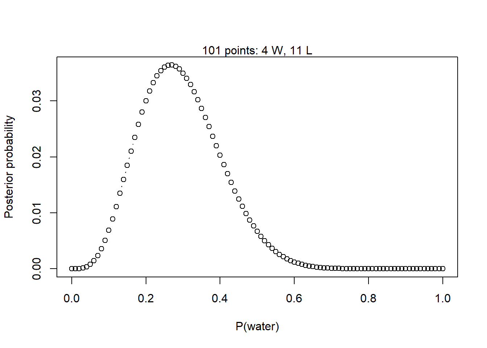
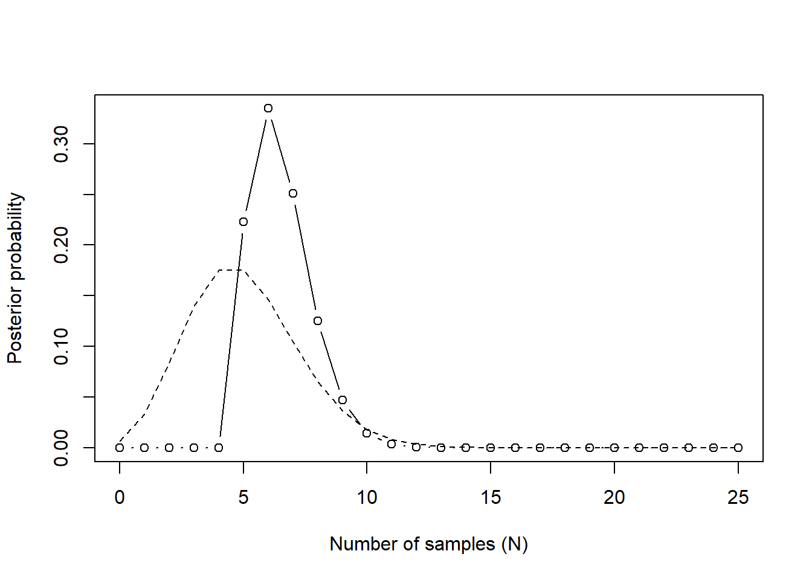

This homework covers the material from Lectures 1 and 2, and the content from book Chapters 1, 2, and 3.
1. Suppose the globe tossing data (Lecture 2, Chapter 2) had turned out to be 4 water and 11 land. Construct the posterior distribution.
Fortunately, I already did a very similar problem in the textbook, so I used the function that I already wrote. This assumes a uniform prior distribution for \(p\).
globe_post <-function(w, l) {# Define the grid of points to evaluate p_grid <-seq(from =0, to =1, by =0.01)# Uniform prior on p: f(x) = 1 / (1 - 0) = 1 for all p prior <-rep(1, times =length(p_grid))# Compute the likelihood over the grid given the observed sample likelihood <-dbinom(w, size = w + l, prob = p_grid)# Compute the unstandardized posterior unstd.posterior <- likelihood * prior# Standardize the posterior posterior <- unstd.posterior /sum(unstd.posterior)# Make the plotplot(p_grid, posterior, type ="b", xlab ="P(water)",ylab ="Posterior probability")mtext(paste(length(p_grid), "points:", w, "W,", l, "L"))# Invisibly return posterior density estimateinvisible(posterior)}# Calculate the posterior after assuming there are 4 water observations and# 11 land observationspost <-globe_post(w =4, l =11)

2. Using the posterior distribution from 1, compute the posterior predictive distribution for the next 5 tosses of the same globe. I recommend you use the sampling method.
First we construct a set of 10000 samples from the posterior distribution. We sample from the same grid of \(p\) values that we used to calculate the posterior distribution, weighting the likelihood of each value by the calculated posterior density.
samples <-sample(x =seq(from =0, to =1, by =0.01),size =1e5,prob = post,replace =TRUE)
Next we compute the posterior predictive distribution. We draw from the likelihood function (with \(n = 5\) to represent the next five samples) using the sampled values of \(p\).
3. Use the posterior predictive distribution from 2 to calculate the probability of 3 or more water samples in the next 5 tosses.
Now that we have the samples from the posterior predictive distribution, this probability is simple to approximate.
mean(post_pred >=3)
[1] 0.1785
The probability of three or more water samples in the next 5 tosses is approximately \(18.28\%\), based on our posterior predictive distribution.
4. Suppose you observe \(W = 5\) water points, but you forgot to write down how many times the globe was tossed, so you don’t know the number of land points, \(L\). Assume that \(p = 0.7\) and compute the posterior distribution of the number of tosses \(N\).
If we assume that \(p = 0.5\) and we observe \(W = 5\) water points, then the likelihood as a function of \(N\) (unknown) is
We need to choose a prior for \(N\) in order to calculate the posterior distribution. We haven’t discussed many different distributions for priors yet, but I’ll choose a Poisson prior because it has the set \(\{0, 1, \ldots, \infty\}\) as its support, so there is no upper limit on \(N\) that we have to choose. The Poisson distribution has one parameter, called \(\lambda\), I’ll choose to be \(5\) for no other reason than that is the number of throws we know we observed. It would also make sense to choose a uniform prior with some very large upper boundary, say \(\mathrm{Uniform}(5, 100)\). (Or even smaller than that, because we can probably place a relatively small upper bound on the number of times we threw the ball, since we know \(p = 0.7\).)
Other than changing the prior, we calculate this the same way. Since it’s impossible for us to evaluate every \(N\) up to \(\infty\), I’ll just calculate up to 25 and that should be plenty.
# Define the grid of points to evaluaten_grid <-seq(from =0, to =25, by =1)# Poisson prior on nprior <-dpois(n_grid, lambda =5)# Compute the likelihood over the grid given the observed samplelikelihood <-dbinom(5, size = n_grid, prob =0.7)# Compute the unstandardized posteriorunstd.posterior <- likelihood * prior# Standardize the posteriorposterior <- unstd.posterior /sum(unstd.posterior)# Make the plotplot(n_grid, posterior, type ="b", xlab ="Number of samples (N)",ylab ="Posterior probability")lines(n_grid, prior, type ="l", lty =2)

In this figure, the points are the observed posterior probabilities. The solid line just connects them to give us a better idea of the shape of the distribution. The dashed line shows the Poisson prior on \(N\).
As we can see in the posterior, it is impossible that we drew less than 5samples. That’s good, that means that our model reflects reality, which is a good sanity check for our golem. Given that \(p = 0.7\) however, it is actually quite plausible that we only tossed the globe 5 times, which could explain why we didn’t write down the number of tosses or the number of land throws – there weren’t any.
However, the MAP estimate would be that we threw the globe 6 times, with 7 times in a close second place. As we get to 10 or higher, it becomes incredibly unlikely that we would throw the ball this many times and only observe 5 water tosses.